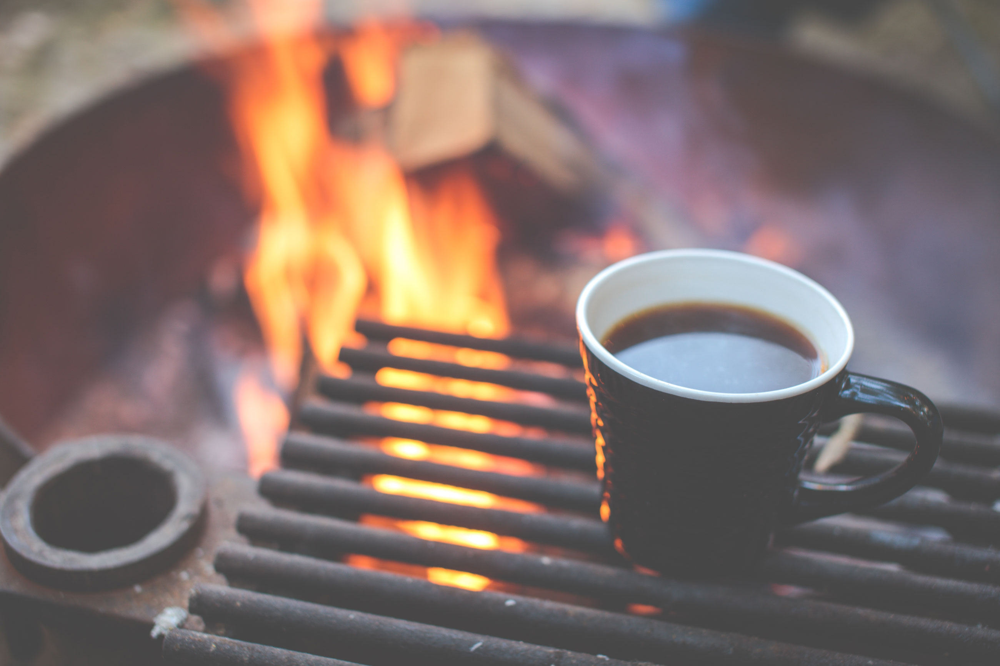
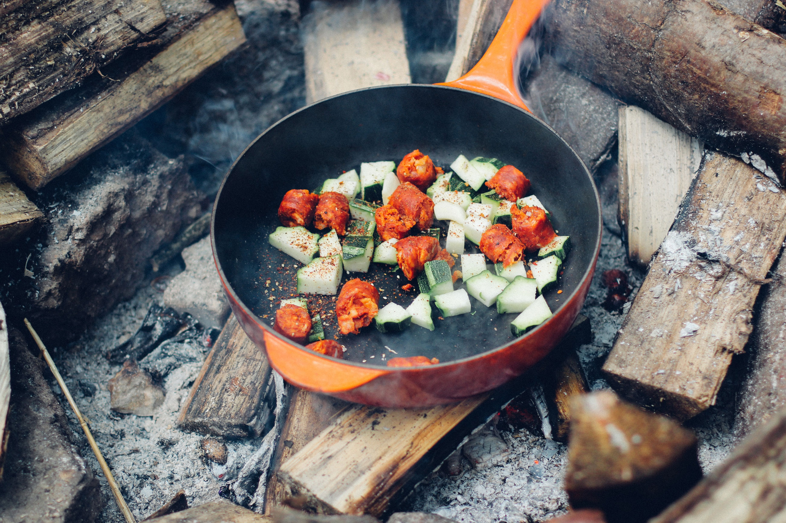

<h1>
  INHABITENT JOURNAL
</h1>

<div class='journal-container'>
    <article>
      
      <p>14 April 2016 / 3 Comments  </p>
      <h3> VAN CAMPING PHOTO CONTEST </h3>
      <button> READ ENTRY </button>
    </article>

    <article>
      
      <p> 2 April 2016 / 0 Comments </p>
      <h3> FIRESIDE LIBATIONS: 3 WARM COCKTAIL RECIPES </h3>
      <button > READ ENTRY  </button>
    </article>

    <article>
      
      <p> 31 March 2016 / 0 Comments </p>
      <h3> HOW TO: EATING HEALTHY MEALS IN THE WILD </h3>
      <button> READ ENTRY </button>
    </article>


</div>
